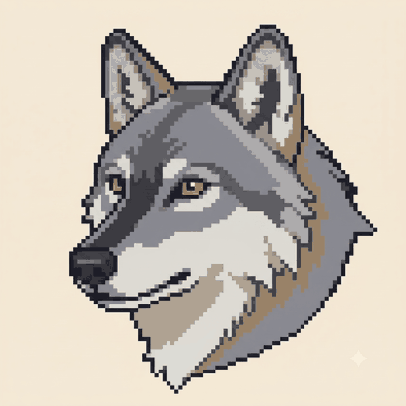

Species
Gray Wolf
Canis lupus
The gray wolf is a wide-ranging social carnivore and keystone predator across the forests and grasslands of the entire Y2Y corridor.
In-game
- Habitat
- all forest, grassland
- Range
- very large
- Crossing preference
- underpass
- Seasonal pattern
- active all year
- Status weight
- ×1 (Common)
Real ecology behind the parameters
Wolves are habitat generalists, using nearly all forest and grassland types, reflected in their broad habitat set. Packs range over very large territories, giving them a very large range. As a keystone species their reintroduction to Greater Yellowstone reshaped whole ecosystems (a trophic cascade) — useful educational flavour in-game. Wolves are active year-round. They readily use underpasses and culverts where available, encoded as their crossing preference — so in v1 (overpasses only) wolves are served less perfectly than overpass-preferring species, by design. Having recovered across much of the region, they carry a ×1 (common) weight.